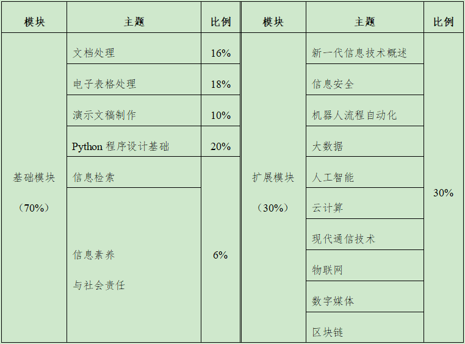

福建省普通高校专升本考试
《信息技术基础》考试说明
普通高校专升本考试（以下简称“专升本考试”）是普通高校全日制高职应届毕业生升入普通高校全日制本科的选拔性考试，其目的是科学、公平、有效地测试考生在高职阶段相关专业知识、基本理论与方法的掌握水平和分析问题、解决问题的能力，以利于各普通本科院校择优选拔，确保招生质量。专升本考试贯彻党的教育方针，落实立德树人根本任务，促进高素质技术技能人才成长，培养德智体美劳全面发展的社会主义建设者和接班人。
《信息技术基础》作为专升本考试理工类的专业基础课，其考试说明主要依据中华人民共和国教育部《高等职业教育专科信息技术课程标准（2021年版）》（以下简称“课程标准”）来确定，注重考查考生对所学相关的基础知识、基本技能和基本思想方法的掌握程度，考查考生的信息技术基本能力。
一、考核目标与要求
（一）知识要求
知识是指课程标准基础模块的文档处理、电子表格处理、演示文稿制作、信息检索、新一代信息技术概述、信息素养与社会责任的概念和方法，也包括课程标准扩展模块的信息安全、机器人流程自动化、程序设计基础、大数据、人工智能、云计算、现代通信技术、物联网、数字媒体、区块链的概念和特性，按照一定程序与步骤进行信息的获取、表示、传输、存储、加工、应用等基本技能。
由浅入深，对知识的要求依次是了解、熟悉、理解、掌握四个层次。
了解：初步知道知识的含义及其简单应用。
熟悉：对知识有系统性地认识，能够找到知识之间的联系，把点状认识连成线，且可以运用相关知识解决部分实际问题。
理解：识记知识的概念和规律（定义、定理、法则等）以及其他相关的联系。
掌握：能够应用知识的概念、定义、定理、法则去解决一些问题。
（二）技能与能力要求
技能与能力包含信息意识、计算思维、数字化创新与发展、信息社会责任四个方面。
信息意识：能了解信息及信息素养在现代社会中的作用与价值，主动地寻求恰当的方式捕获、提取和分析信息，以有效的方法和手段判断信息的可靠性、真实性、准确性和目的性，对信息可能产生的影响进行预期分析，自觉地充分利用信息解决生活、学习和工作中的实际问题，具有团队协作精神，善于与他人合作、共享信息，实现信息的更大价值。
计算思维：能采用计算机等智能化工具可以处理的方式界定问题、抽象特征、建立模型、组织数据，能综合利用各种信息资源、科学方法和信息技术工具解决问题，能将这种解决问题的思维方式迁移运用到职业岗位与生活情境的相关问题解决过程中。
数字化创新与发展：能理解数字化学习环境的优势和局限，能从信息化角度分析问题的解决路径，并将信息技术与所学专业相融合，通过创新思维、具体实践使问题得以解决；能合理运用数字化资源与工具，养成数字化学习与实践创新的习惯，开展自主学习、协同工作、知识分享与创新创业实践，形成可持续发展能力。
信息社会责任：在现实世界和虚拟空间中都能遵守相关法律法规，信守信息社会的道德与伦理准则；具备较强的信息安全意识与防护能力，能有效维护信息活动中个人、他人的合法权益和公共信息安全；关注信息技术创新所带来的社会问题，对信息技术创新所产生的新观念和新事物，能从社会发展、职业发展的视角进行理性的判断和负责的行动。
二、考试内容与要求
考试内容分为基础模块和扩展模块，各模块分值比例如表1所示。其中，基础模块包括：文档处理、电子表格处理、演示文稿制作、Python程序设计基础、信息检索、信息素养与社会责任等六个部分；扩展模块包括：新一代信息技术概述、信息安全、机器人流程自动化、大数据、人工智能、云计算、现代通信技术、物联网、数字媒体、区块链等十个部分。
表1 分值比例
（一）文档处理
包含文档的基本编辑、图片的插入和编辑、表格的插入和编辑、样式与模板的创建和使用、多人协同编辑文档等内容。
1.掌握文档的基本操作，如打开、复制、保存等，熟悉自动保存文档、联机文档、保护文档、检查文档、将文档发布为 PDF格式、加密发布 PDF格式文档等操作；
2.掌握文本编辑、文本查找和替换、段落的格式设置等操作；
3.掌握图片、图形、艺术字等对象的插入、编辑和美化等操作；
4.掌握在文档中插入和编辑表格、对表格进行美化、灵活应用公式对表格中数据进行处理等操作；
5.熟悉分页符和分节符的插入，掌握页眉、页脚、页码的插入和编辑等操作；
6.掌握样式与模板的创建和使用，掌握目录的制作和编辑操作；
7.熟悉文档不同视图和导航任务窗格的使用，掌握页面设置操作；
8.掌握打印预览和打印操作的相关设置；
9.熟悉多人协同编辑文档的方法和技巧。
（二）电子表格处理
包含工作表和工作簿操作、公式和函数的使用、图表分析展示数据、数据处理等内容。
1.了解电子表格的应用场景，熟悉相关工具的功能和操作界面；
2.掌握新建、保存、打开和关闭工作簿，切换、插入、删除、重命名、移动、复制、冻结、显示及隐藏工作表等操作；
3.掌握单元格、行和列的相关操作，掌握使用控制句柄、设置数据有效性和设置单元格格式的方法；
4.掌握数据录入的技巧，如快速输入特殊数据、使用自定义序列填充单元格、快速填充和导入数据，掌握格式刷、边框、对齐等常用格式设置；
5.熟悉工作簿的保护、撤销保护和共享，工作表的保护、撤销保护，工作表的背景、样式、主题设定；
6.理解单元格绝对地址、相对地址的概念和区别，掌握相对引用、绝对引用、混合引用及工作表外单元格的引用方法；
7.熟悉公式和函数的使用，掌握平均值、最大/最小值、求和、计数、条件等常见函数的使用；
8.了解常见的图表类型及电子表格处理工具提供的图表类型，掌握利用表格数据制作常用图表的方法；
9.掌握自动筛选、自定义筛选、高级筛选、排序和分类汇总等操作；
10.理解数据透视表的概念，掌握数据透视表的创建、更新数据、添加和删除字段、查看明细数据等操作，能利用数据透视表创建数据透视图；
11.掌握页面布局、打印预览和打印操作的相关设置。
（三）演示文稿制作
包含演示文稿制作、动画设计、母版制作和使用、演示文稿放映和导出等内容。
1.了解演示文稿的应用场景，熟悉相关工具的功能、操作界面和制作流程；
2.掌握演示文稿的创建、打开、保存、退出等基本操作；
3.熟悉演示文稿不同视图方式的应用；
4.掌握幻灯片的创建、复制、删除、移动等基本操作；
5.理解幻灯片的设计及布局原则；
6.掌握在幻灯片中插入各类对象的方法，如文本框、图形、图片、表格、音频、视频等对象；
7.理解幻灯片母版的概念，掌握幻灯片母版、备注母版的编辑及应用方法；
8.掌握幻灯片切换动画、对象动画的设置方法及超链接、动作按钮的应用方法；
9.了解幻灯片的放映类型，会使用排练计时进行放映；
10.了解幻灯片不同格式的导出方法。
（四）Python程序设计基础
包含Python程序设计基础知识、Python程序设计语言和工具、Python程序设计方法和实践等内容。
1.理解程序设计的基本概念；
2.了解程序设计的发展历程和未来趋势；
3.掌握典型程序设计的基本思路与流程；
4.了解Python程序设计语言的特点和适用场景；
5.掌握Python编程工具的安装、环境配置和基本使用方法；
6.掌握Python程序设计语言的基本语法、流程控制、数据类型、函数、模块、文件操作、异常处理等；
7.掌握Python程序的编写和调试方法。
（五）信息检索
包含信息检索基础知识、搜索引擎使用技巧、专用平台信息检索等内容。
1.理解信息检索的基本概念，了解信息检索的基本流程；
2.掌握常用搜索引擎的自定义搜索方法，掌握布尔逻辑检索、截词检索、位置检索、限制检索等检索方法；
3.掌握通过网页、社交媒体等不同信息平台进行信息检索的方法；
4.掌握通过期刊、论文、专利等专用平台（中国知网、国家知识产权局专利检索及分析平台）进行信息检索的方法。
（六）信息素养与社会责任
包含信息素养、信息技术发展史、信息伦理与职业行为自律等内容。
2. 了解信息技术发展史及知名企业的兴衰变化过程，树立正确的职业理念；
1.了解信息素养的基本概念及主要要素；
3.了解信息安全及自主可控的要求；
4.了解信息伦理知识，了解相关法律法规与职业行为自律的要求；
5.了解个人在不同行业内发展的共性途径和工作方法。
（七）新一代信息技术概述
包含新一代信息技术的基本概念、技术特点、典型应用、技术融合等内容。
1.理解新一代信息技术及其主要代表技术的基本概念；
2.了解新一代信息技术各主要代表技术的技术特点；
3.了解新一代信息技术各主要代表技术的典型应用；
4.了解新一代信息技术与制造业等产业的融合发展方式。
（八）信息安全
包含信息安全意识、信息安全技术、信息安全应用等内容。
1.建立信息安全意识，能识别常见的网络欺诈行为；
2.了解信息安全的基本概念，包括信息安全基本要素、网络安全等级保护等内容；
3.了解信息安全相关技术，了解信息安全面临的常见威胁和常用的安全防御技术；
4.了解常用网络安全设备的功能和部署方式；
5.了解网络信息安全保障的一般思路；
6.掌握利用系统安全中心配置防火墙的方法；
7.熟悉利用系统安全中心配置病毒防护的方法；
8.熟悉常用第三方信息安全工具的使用方法，并能解决常见的安全问题。
（九）机器人流程自动化
包含机器人流程自动化基础知识、技术框架和功能、工具应用、软件机器人的创建和实施等内容。
1.理解机器人流程自动化的基本概念，了解机器人流程自动化的发展历程和主流工具；
2.了解机器人流程自动化的技术框架、功能及部署模式等；
3.熟悉机器人流程自动化工具的使用过程。
（十）大数据
包含大数据基础知识、大数据系统架构、大数据分析算法、大数据应用及发展趋势等内容。
1.理解大数据的基本概念、结构类型和核心特征；
2.了解大数据的时代背景、应用场景和发展趋势；
3.了解大数据系统架构，理解大数据在获取、存储和管理方面的技术架构；
4.了解大数据工具与传统数据库工具在应用场景上的区别，掌握简单大数据环境的搭建方法。
（十一）人工智能
包含人工智能基础知识、人工智能核心技术、人工智能技术应用等内容。
1.了解人工智能的定义、基本特征和社会价值；
2.了解人工智能的发展历程，及其在互联网及各传统行业中的典型应用和发展趋势；
3.熟悉人工智能技术应用的常用开发平台、框架和工具，了解其特点和适用范围；
4.熟悉人工智能技术应用的基本流程和步骤；
5.了解人工智能涉及的核心技术及部分算法，能使用人工智能相关应用解决实际问题。
（十二）云计算
包含云计算基础知识和模式、技术原理和架构、主流产品和应用等内容。
1.了解云计算的基本概念，了解云计算的主要应用行业和典型场景；
2.了解云计算的服务交付模式，包括基础设施即服务、平台即服务和软件即服务等；
3.熟悉云计算的部署模式，包括公有云、私有云、混合云等。
（十三）现代通信技术
包含现代通信技术基础、5G技术、其他现代通信技术等内容。
1.理解通信技术、现代通信技术、移动通信技术、5G技术等概念，掌握相关的基础知识；
2.了解现代通信技术的发展历程及未来趋势；
3.了解移动通信技术中的传输技术、组网技术等；
4.了解5G的应用场景、基本特点和关键技术；
5.了解蓝牙、Wi-Fi、ZigBee、射频识别、卫星通信、光纤通信等现代通信技术的特点和应用场景；
6.了解现代通信技术与其他信息技术的融合发展。
（十四）物联网
包含物联网基础知识、物联网体系结构和关键技术、物联网系统应用等内容。
1.了解物联网的概念、应用领域和发展趋势；
2.了解物联网和其他技术的融合，如物联网与5G技术、物联网与人工智能技术等；
3.熟悉物联网感知层、网络层和应用层的三层体系结构，了解每层在物联网中的作用；
4.熟悉物联网感知层关键技术，包括传感器、自动识别、智能设备等；
5.熟悉物联网网络层关键技术，包括无线通信网络、互联网、卫星通信网等；
6.熟悉物联网应用层关键技术，包括云计算、中间件、应用系统等。
（十五）数字媒体
包含数字媒体基础知识、数字文本、数字图像、数字声音、数字视频、HTML5应用制作和发布等内容。
1.理解数字媒体和数字媒体技术的概念；
2.了解数字媒体技术的发展趋势；
3.了解数字文本处理的技术过程，了解文本准备、文本编辑、文本处理、文本存储和传输、文本展现等操作；
4.了解数字图像处理的技术过程，了解对数字图像进行去噪、增强、复制、分割、提取特征、压缩、存储、检索等操作；
5.了解数字声音的特点，熟悉处理、存储和传输声音的数字化过程，了解通过移动端应用程序进行声音录制、剪辑与发布等操作；
6.了解数字视频的特点，熟悉数字视频处理的技术过程，了解通过移动端应用程序进行视频制作、剪辑与发布等操作；
7.了解HTML5应用的新特性，掌握HTML5应用的制作和发布；
8.了解虚拟现实技术的基本概念、发展历程、应用场景和未来趋势。
（十六）区块链
包含区块链基础知识、区块链应用领域、区块链核心技术等内容。
1.了解区块链的概念、发展历史、技术基础、特性等；
2.了解区块链的分类，包括公有链、联盟链、私有链；
3.了解区块链技术在金融、供应链、公共服务、数字版权等领域的应用；
4.了解区块链技术的价值和未来发展趋势；
5.了解比特币等典型区块链项目的机制和特点；
6.了解分布式账本、非对称加密算法、智能合约、共识机制的技术原理。
三、考试形式与参考题型
（一）考试形式
考试采用闭卷、笔试形式。考试时间为150分钟，全卷满分300分。考试不使用计算器。
（二）参考题型
考试题型包括单选题、多选题、判断题、填空题、编程题、操作题、综合题等，也可以采用其它符合学科性质和考试要求的题型。
四、参考书目
含有上述考试内容的《信息技术基础》《全国计算机等级考试二级教程——Python语言程序设计》等相关参考书目。
五、其它说明
考试所涉及到的软件如下：
操作系统：Microsoft Windows 10或以上。
办公软件：WPS Office 2019或以上。
程序设计语言：Python 3.8或以上。